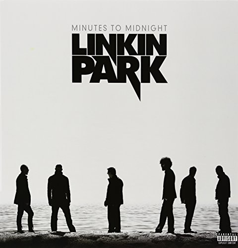

Hybrid Theory
Linkin Park's debut album, "Hybrid Theory," released on October 24, 2000, introduced their unique fusion of
nu-metal and rap-rock, addressing themes of personal struggles and identity. In the historical context of the early 2000s, the
album resonated with a generation dealing with societal changes. With 12 tracks, including hits like "In the End" and "Crawling,"
"Hybrid Theory" set the stage for Linkin Park's widespread success, achieving multi-platinum status and significantly impacting
their trajectory in the music industry.
×
- Papercut
- One Step Closer
- With You
- Points of Authority
- Crawling
- Runaway
- By Myself
- In the End
- A Place for My Head
- Forgotten
- Cure for the Itch
- Pushing Me Away
Reanimation
Following the groundbreaking success of "Hybrid Theory," Linkin Park released "Reanimation," a remix album
that breathed new life into their debut tracks. Released on July 30, 2002, the album featured 20 creatively reimagined tracks,
showcasing the band's versatility in experimenting with various musical styles. Notable remixes like "Pts.of.Athrty" and "Enth E Nd"
not only highlighted the band's willingness to innovate but also reinforced their reputation for pushing the boundaries of
conventional music, solidifying their position as pioneers in nu-metal.
×
- Opening
- Pts.Of.Athrty
- Enth E Nd (Ft. Motion Man)
- [Chali]
- Frgt/10 (Ft. Chali 2NA)
- P5hng Me A*wy (Ft. Stephen Richards)
- Plc.4 Mie Hæd (Ft. Zion I)
- X-Ecutioner Style (Ft. Black Thought)
- H! Vltg3 (Ft. DJ Babu & Pharoahe Monch)
- [Riff Raff]
- WthᐳYou (Ft. Aceyalone)
- Ntr\\mssion
- Ppr:kut (Ft. Planet Asia & Rasco)
- Rnw@y (Ft. Phoenix Orion)
- MyᐸDsmbr (Ft. Kelli Ali)
- [Stef]
- By_Myslf (Ft. Stephen Carpenter)
- Kyur4 th Ich
- 1Stp Klosr (Ft. Jonathan Davis)
- Krwlng (Ft. Aaron Lewis)

Meteora
Released on March 25, 2003, "Meteora" emerged as Linkin Park's sophomore effort, heightening the emotional
intensity established in "Hybrid Theory." Comprising 13 tracks, including hits like "Numb" and "Somewhere I Belong," the album
solidified the band's position in the nu-metal scene of the early 2000s. With its powerful lyrics and dynamic sound, "Meteora"
marked a significant milestone in their mainstream success, resonating with a global audience and establishing Linkin Park as
a dominant force in contemporary rock music.
×
- Foreword
- Don't Stay
- Somewhere I Belong
- Lying from You
- Hit the Floor
- Easier to Run
- Faint
- Figure.09
- Breaking the Habit
- From the Inside
- Nobody's Listening
- Session
- Numb

Minutes to Midnight
Released on May 14, 2007, "Minutes to Midnight" marked a pivotal moment in Linkin Park's evolution. In the
midst of global political turmoil, the album's 12 tracks delved into alternative rock and political themes. Notable songs like
"What I've Done" and "Bleed It Out" showcased the band's evolving sound and maturity, demonstrating their ability to navigate
new territories. This departure from their previous nu-metal roots indicated a band willing to experiment and grow, expanding
their musical horizons.
×
- Wake
- Given Up
- Leave Out All the Rest
- Bleed It Out
- Shadow of the Day
- What I've Done
- Hands Held High
- No More Sorrow
- Valentine's Day
- In Between
- In Pieces
- The Little Things Give You Away
A Thousand Suns
Released on September 8, 2010, "A Thousand Suns" stands out as a conceptual masterpiece. Against the backdrop
of global anxieties and technological advancements, the album's 15 tracks, including "The Catalyst" and "Waiting for the End,"
delved deep into themes of nuclear war and political commentary. This ambitious project showcased Linkin Park's willingness to
experiment and push creative boundaries, positioning them as artists unafraid to use their platform to address significant global issues.
×
- The Requiem
- The Radiance
- Burning in the Skies
- Empty Spaces
- When They Come for Me
- Robot Boy
- Jornada Del Muerto
- Waiting for the End
- Blackout
- Wretches and Kings
- Wisdom, Justice, and Love
- Iridescent
- Fallout
- The Catalyst
- The Messenger

Living Things
Released on June 20, 2012, "Living Things" marked a return to a more electronic and rock-oriented sound. With 12
tracks, including hits like "Burn It Down" and "Castle of Glass," the album showcased Linkin Park's adaptability while maintaining
their signature style. In a constantly evolving music landscape, "Living Things" demonstrated the band's ability to stay relevant and
experiment with new sounds, resonating with both longtime fans and a new generation of listeners.
×
- Lost in the Echo
- In My Remains
- Burn It Down
- Lies Greed Misery
- I'll Be Gone
- Castle of Glass
- Victimized
- Roads Untraveled
- Skin to Bone
- Until It Breaks
- Tinfoil
- Powerless

Recharged
Released on October 29, 2013, "Recharged" stands as Linkin Park's vibrant remix endeavor, reimagining their fifth
studio album, "Living Things." Featuring a robust collection of 14 tracks, noteworthy remixes, including "A Light That Never Comes" and
the M. Shinoda Remix of "Castle of Glass," showcase the seamless fusion of rock and electronic elements. Amid the electronic dance music
(EDM) surge during its release, "Recharged" not only demonstrated Linkin Park's adaptability but also positioned them as pioneers in
navigating the convergence of multiple genres. Beyond being a remix compilation, the album contributing another layer to Linkin Park's
diverse musical portfolio.
×
- A Light That Never Comes by Linkin Park & Steve Aoki
- Castle of Glass (M. Shinoda Remix)
- Lost in the Echo (KillSonik Remix)
- Victimized (M. Shinoda Remix)
- I'll Be Gone (Vice Remix) (Ft. Pusha T)
- Lies Greed Misery (Dirtyphonics Remix)
- Roads Untraveled (Rad Omen Remix) (Ft. Bun B)
- Powerless (Enferno Remix)
- Burn It Down (Tom Swoon Remix)
- Until It Breaks (Datsik Remix)
- Skin to Bone (Nick Catchdubs Remix) (Ft. Cody B. Ware & Ryu)
- I'll Be Gone (Schoolboy Remix)
- Until It Breaks (Money Mark Headphone Remix)
- A Light That Never Comes (Rick Rubin Reboot) by Linkin Park & Steve Aoki

The Hunting Party
Released on June 13, 2014, "The Hunting Party" marked a distinct shift in Linkin Park's musical direction. Taking
a heavier and more aggressive turn, the album represented a return to the band's rock roots. Responding to criticism of their previous
electronic direction, the album's 12 tracks, including hits like "Guilty All the Same" and "Until It's Gone," gained appreciation for
their raw energy and intensity, showcasing Linkin Park's versatility and ability to cater to a diverse audience.
×
- Keys to the Kingdom
- All for Nothing (feat. Page Hamilton)
- Guilty All the Same (feat. Rakim)
- The Summoning
- War
- Wastelands
- Until It's Gone
- Rebellion (feat. Daron Malakian)
- Mark the Graves
- Drawbar (feat. Tom Morello)
- Final Masquerade
- A Line in the Sand

One More Light
Released on May 19, 2017, "One More Light" marked a departure into pop and electronic elements, exploring themes of
loss and resilience. With 10 tracks, including "Heavy" and "One More Light," the album received mixed reviews for its deviation from
the band's traditional sound. Beyond musical critique, the release took on unexpected significance as the final studio album before the
tragic passing of lead vocalist Chester Bennington, adding a poignant layer to discussions surrounding the band's musical direction. The
album stirred deep emotions and discussions among fans, reflecting the profound impact Linkin Park has had on its audience throughout their
career.
×
- Nobody Can Save Me
- Good Goodbye
- Talking to Myself
- Battle Symphony
- Invisible
- Heavy (feat. Kiiara)
- Sorry for Now
- Halfway Right
- One More Light
- Sharp Edges